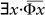
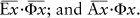

. şeklinde yazmak doğrudur, benim yazdığım gibi.
. şeklinde yazmak doğrudur, benim yazdığım gibi.Lacan’ın matematiksel ilgisi önce topolojide yoğunlaşıyor. Matematiğin bu dalı (başka bazı şeylerin yanı sıra) biçimleri yırtılıp parçalanmadan değiştirildiğinde özellikleri değişmeyen yüzeyler ve katı cisimler gibi geometrik nesnelerle ilgilenir. (Topologlar simitle kahve fincanı arasındaki farkı bilemezler çünkü ikisi de tek delikli katı nesnelerdir, diye dalga geçilir.) Lacan’ın topolojiye göndermeleri 1950'lere kadar uzanmakla birlikte bu konudaki ilk kapsamlı (ve kamuya ulaşan) tartışması 1966'da Johns Hopkins Üniversitesi'nde eleştirinin dili ve insan bilimleri üzerine verdiği bir konferanstır. İşte Lacan'ın bu konferansından bir alıntı:
Bu diagram (Möbius şeridi){27} özneyi oluşturan düğüm ya da kökenin bir çeşit asal belirteci olarak düşünülebilir. Aslına bakarsak bu sizin aklınıza ilk gelenlerden öte bir şeydir. Çünkü bu tür belirteçleri içinde barındıracak yüzeyler peşine düşebilirsiniz. Ama siz bile, belki bütüncüllüğün köhne simgesi olan kürenin, burada uygun olmadığını görebilirsiniz. Oysa bir torus, bir Klein şişesi, bir cross-cap{28} içinde bu kesiti barındırabilir. İşte bu can alıcı çeşitlilik çok önemlidir çünkü ruh hastalıklarının yapısı hakkında birçok şeyi açıklar. Kişiyi bu temel kesitle simgelersek, aynı şekilde bir torus kesitinin de nörotik kişilerle ve başka cins ruh hastalıklarının da başka kesitlerle eşleşeceğini göstermiş oluruz. (Lacan 1970, s. 192-193)
Belki okuyucu bu değişik topolojik nesnelerin ruh hastalıklarının yapısıyla ne ilgisi olduğunu merak ediyordur. İnanın biz de merak ediyoruz ama Lacan'ın metninin hiçbir yerinde bu konuya açıklık getirilmiyor. Yine de Lacan her şeye rağmen topolojisinin “birçok şeyi açıkladığı” konusunda diretiyor. Konferanstan sonraki tartışmalarda şöyle bir karşılıklı konuşma geçiyor:
HARRY WOOLF: Bütün bu temel aritmetik ve topolojinin birer mit olup olmadıklarını, bunların aslında ruhsal yaşamı açıklamak için birer analoji olarak mı kullanıldıklarım sorabilir miyim?
JACQUES LACAN: Neyin analojisi? “S”, yalnızca bu “S” gibi yazılabilecek bir şeyi işaret eder. Daha önce de söylediğim gibi özneyi (subject) işaret eden bu “S” yitişi simgeleyen bir araç, bir maddedir. Bu yitiş, sizin bir özne olarak sürekli yaşadığınız bir deneyimdir. (Benim de.) Başka bir deyişle, damgalanmış anlamları olan bu şey ile sizin bulunduğunuz yere yerleştirmeye çalıştığım asıl söylemim olan diğer şey (siz, yani beni anlayan, anlattıklarımı anlayabilen insanlar) arasındaki boşluktur. Öyleyse “analogon” bunun neresinde? Bu yitiş ya vardır, ya da yoktur. Eğer varsa ancak bir simgeler sistemiyle belirtilebilir. Her durumda söz konusu simgeselleştirme, bu yitişin yerini göstermeden yitiş var olamaz. Bu bir analoji değildir. Bu aslında gerçekliklerin bir bölümüdür, bir cins torus. Bu torus gerçekten vardır ve tam da nörotiğin yapısıdır. Bu bir analogon değildir; bu bir soyutlama bile değildir çünkü soyutlama gerçekliğin bir kısılmasıdır. Dolayısıyla gerçekliğin ta kendisi olduğunu düşünüyorum. (Lacan 1970, s. 195-196)
Burada Lacan yine “nörotiklerin yapısının” tam bir torus olduğu (her ne demek oluyorsa) konusundaki kesin saptamasına hiçbir açıklama getirmiyor. Ayrıca bunun yalnızca bir benzetme olup olmadığı açıkça sorulduğunda da benzetmeyi reddediyor.
Yıllar geçtikçe Lacan’ın topolojiye olan tutkusu ve düşkünlüğü artıyor. 1972'deki bir yazısı bu sözcüğün etimolojisiyle oynayarak başlıyor (Yunanca topos, yer + logos, bilgi):
Bu haz [jouissance] uzayında, sınırlı, kapalı [borne, jerme] bir şey ele almak bir yer [lieu] oluşturur ve bundan söz etmek topolojidir (Lacan, 1975 s. 14; Lacan, 1998 s. 9; seminerin aslı 1972'de verilmiştir){29}
L'oeuvre de Lacan matematiksel çözümlemeye ilişkin dört teknik terim kullanıyor (uzay, sınırlı [bounded], kapalı, topoloji) ama anlamlarına hiç aldırmıyor. Bu tümce matematiksel bakımdan anlamsız. Üstelik daha da önemlisi Lacan bu kavramların psikanalizle ilgilerinin ne olabileceği konusunda hiçbir açıklama yapmıyor. “Jouissance” (haz) kavramının çok belirli ve açık bir anlamı olduğunu varsaysak bile Lacan bu jouissance'ın topolojideki teknik anlamıyla bir “uzay” gibi ele alınabileceğine ilişkin hiçbir gerekçe göstermiyor. Ve her şeye karşın devam ediyor:
Geçen yılki söylemimin en keskin yönünü oluşturan ve yakında yayınlanacak olan bir yazımda topolojiyle yapının kesin eşdeğerliğini sanırım göstermiştim.{30} Bunu yol göstericimiz olarak alırsak, haz [jouissance] sözcüğüyle dile getirdiğimiz (yani yasayla düzenlenen) kavramı adsızlıktan ayıran şey bir geometridir. Geometri bir yerin [locus, neu] tektip olmadığını, ayrışık olduğunu, yani Ötekinin de bir yeri olduğunu söyler.{31} Acaba topolojideki son gelişmeler bize bu Ötekinin yeri (diğer cins olarak Öteki, mutlak Öteki) ile ilgili nasıl bir koyuta izin verir?
Ben burada “pekişiklik” terimini ortaya koyuyorum.{32} Onun içinde kapsanan her şeyin kesişiminin sonsuz sayıda kümeler boyunca var olduğunun kabul edildiği ve bunun kesişimin sonsuz sayıyı gösteriyor olmasından kaynaklandığı göz önüne alındığında, bir yanılgıdan [faille) daha pekişik bir şey olamaz. Bu, pekişikliğin tam tanımıdır (Lacan 1975a, s. 14; Lacan 1998, s.9).
Hiç de değil: Lacan, matematikteki pekişiklik [compactness] kuramından birkaç anahtar sözcük kullanıyor (6. nota bakın) ama bunları anlamlarını hiç göz önüne almaksızın gelişigüzel sağa sola dağıtıyor. Verdiği pekişiklik “tanımı” yalnız yanlış değil, abuk sabuk. Ayrıca sözünü ettiği “topolojideki son gelişmeler” 1900 ile 1930 arasına isabet ediyor.
Şöyle devam ediyor:
Sözünü ettiğim kesişim, daha önce öne sürdüğüm, olduğu varsayılan cinsel ilişkiye olan engeli kapsayan ya da onu ortaya koyan şeyle aynıdır.
“Varsayılan” diyoruz çünkü çözümleyici söylem yalnızca böyle bir şeyin var olmadığı ve bir cinsel ilişkinin oluşturulamayacağı ön koşuluna dayanır demiştim, işte burada çözümleyici söylem ileri bir adım atar, böylece olası bütün diğer söylemlerin gerçek durumunu belirler.
Cinsel ilişkinin olanaksızlığını içeren noktayı burada böylece isimlendirdik. Haz [jouissance] ki cinseldir, erkek cinsel organıyla ilişkilidir başka bir deyişle, Öteki ile bağı yoktur.
Şimdi burada pekişiklik hipotezinin tümleyici özelliğine bakalım.
Topoloji, aykırılığı sayıların incelenmesinden ve tek tür bir uzaya ait olmayan bir yer [locus] kurumunun oluşmasına yol açan bir mantıktan kaynaklanan, benim en son gelişmeler olarak nitelediğim bir biçimlendirme sağlıyor. Şimdi yine, daha önceden kesişimi sonsuzluğa uzananla eşdeğer olduğunu söylediğim, sınırlı,{33} kapalı ve kurumsal olduğu varsayılan aynı uzayı ele alalım. Bunun açık kümelerce kapsandığını, başka bir deyişle kendi sınırlarını aşan kümelerce kapsandığını varsayarsak –limit bir noktadan büyük, diğerinden küçük olarak tanımlanır ama hiçbir zaman ne terk edilen ne de varılan noktaya eşittir, sizin anlayacağınız–{34} bunun, bütün açık uzaylar kümesinin her zaman açık uzayların alt-kapsanmasına izin verdiğini, dolayısıyla sonluluk oluşturduğunu, öğe dizilerinin sonlu diziler oluşturduğunu söylemekle eşdeğer olduğunu gösterebiliriz.
Dikkatinizi çekmiştir, sayılabilir olduklarını söylemedim. Oysa, “sonlu” terimi buna işaret eder. Önünde sonunda bunları birer birer sayarız. Ama saymadan önce bunlar içinde bir düzen bulmamız gerekir, öte yandan böyle bir düzenin bulunabilir olduğunu da hemen varsayanlayız.{35}
Cinsel haz durumunda kapalı ve sınırlı{36} olan bir uzayı kapsayan açık uzayların sonlu olduklarının gösterilmesi neye işaret edebilir ki zaten? Şuna işaret eder: Sözü geçen uzaylar birer birer [un par un] ele alınabilir, ama öbür kutuptan söz ettiğime göre bunu dişil olarak söyleyelim: birer birer [une par une].
İşte böylece pekişik olduğu kanıtlanan cinsel haz uzayında da durum budur (Lacan 1975a, s. 14-15; Lacan 1998, s.9-10).
Bu parça, Lacan’ın söylemindeki iki “yanlışı” çok güzel gösteriyor. Birincisi, her şey (en iyi olasılıkla) topolojiyle psikanaliz arasında yapılan benzetmelere dayanıyor ama hiçbir savla desteklenmiyor. İkincisi, matematiksel sözlerin kendileri bile anlamdan yoksunlar.
Lacan’ın topolojiye olan ilgisi 1970'lerin ortalarında düğüm kuramına doğru kaymış (Lacan 1975a, s 107-123; 1998, s. 122-136; özellikle de 1975b-e). Lacan’ın topoloji takıntısının ayrıntılı tarihî gelişimi için Roudinesco (1997, 28. Bölüm)'e bakınız. Lacan’ın yandaşları “topologie psycanalytique” ile ilgili çok kapsamlı değerlendirmeler yayınlamışlar: örneğin Granon-Lafont (1985, 1990), Vappereau (1985, 1995), Nasio (1987, 1992), Darmon (1990) ve Leupin (1991).
Lacan'ın yapıtlarındaki matematiksel eğilimler hiç de marjinal değil. Daha 1950'lerdeki yazıları bile grafiklerle, formüllerle ve “algoritmalarla” dolu. Bunu size 1959'da verdiği bir seminerden bir alıntıyla gösterelim:
İzin verirseniz, müsvedde yaparken aklıma gelen ve insan yaşamının, sıfırın irrasyonel sayı olduğu bir kalkülüs gibi tanımlandığı formüllerimden birini kullanalım burada. Bu formül yalnızca bir görüntü, matematiksel bir metafordur. Ben burada “irrasyonel” derken dipsiz bir duygu durumunu değil, kesin olarak hayali sayı dedikleri şeyi kastediyorum. Eksi bir'in karekökü, bizim sezgilerimize hitab eden ya da gerçek olan hiçbir şeyle (terimin matematiksel anlamında) örtüşmemesine rağmen bütün işleviyle korunmalıdır (Lacan 1977a, s. 28-29. Asıl seminer 1959'da verilmiştir)
Bu parçada Lacan “kesin” olduğunu ileri sürerken hayali sayılarla irrasyonel sayıları birbirine karıştırıyor. Bu sayıların aslında birbirleriyle hiçbir ilgisi yoktur.{37} Ayrıca “irrasyonel” ve “hayali” söcüklerinin matematikteki anlamlarının günlük ya da felsefî kullanımdakilerden çok farklı olduklarını da burada belirtelim. Hiç kuşkusuz Lacan burada temkinli davranıp bir metafordan söz ediyor ama bu metaforun (yani insan yaşamının “sıfırın irrasyonel olduğu bir kalkülüs” gibi görülebilmesinin) hangi kuramsal boşluğu doldurmakta nasıl bir işlevi olabileceğini anlamak çok güç. Buna rağmen Lacan bir yıl sonra hayali sayıların psikanalitik rolleri ile ilgili düşüncelerini geliştirmeye devam ediyor:
Şahsen ben, sözlerime S(Ø) simgesinin bir gösteren olmasından ötürü içinde dile getirdiği şeyle başlayacağım...
Ve bu gerçekten ötürü zaten bütünsel olan gösterenler dizgesindeki bu gösteren ancak bir doğru [trait] olabilir; öyle ki onun parçası sayılamayacağı halde kendi çemberinden çizilmiş. Bütün gösterenler kümesinde bir (-1)'den süzülmüş olarak simgelenebilir.
Bu haliyle kendisi dışa vurulamaz ama işlemi dışa vurulabilir çünkü ancak belli bir isim dillendiğinde oluşur, ifadesi, anlamlanmasıyla eştir.
Dolayısıyla burada kullanılan cebirsel yönteme göre anlamlamayı hesaplarsak:
S (gösteren) / s (ifade) = s (deyim)
ile S =(–1), bulunur: s = √ –1 .
(Lacan 1977b, s. 316-317, asıl seminer 1960'ta verilmiştir).
Burada Lacan düpedüz okuru işletiyor. Bu “cebirin” bir anlamı olsa bile içinde geçen “gösteren”, “gösterilen” ve “ifade”nin, sayılar olmadıkları ve gelişigüzel çizilen yatay çizginin iki sayının birbirine bölüneceğini göstermediği apaçık. Dolayısıyla tüm “hesaplar” baştan aşağı hayal ürünü.{38} Her şeye karşın Lacan iki sayfa sonra bu temaya geri dönüyor:
Kuşkusuz Claude-Levi Strauss, Mauss üstüne yaptığı yorumda “0” simgesinin etkisini anlamaya çalışmıştır. Ama bana öyle geliyor ki burada söz konusu olan daha çok “0” simgesinin yokluğu gösterenidir. Bundan ötürü bir miktar rezillik pahasına, benim matematiksel kavramları kullanımımda onları hangi noktaya kadar çarpıttığımı da belirttim: karmaşık sayılar kuramında hâlâ “i” olarak yazılan √ –1 simgesi açıkça geçerlidir çünkü sonraki kullanımlarında herhangi bir otomatizm içermez.
Böylece kalkan organ, kendi içinde ya da bir görüntü biçiminde bile değil, arzulanan görüntünün içinde eksik olan bir parça olarak haz yerini (jouissance) simgeler: işte bu nedenle yukarıda gösterdiğimiz anlamlamanın √ –1 'i ile eşdeğerdir, demek ki -1 göstereninin olmayışı işlevi ifadesinin katsayısıyla hazzı doğrultan şeydir. (Lacan 1977b s. 318-320)
İtiraf ediyoruz ki kalkan organlarımızın √ –1 'e eşlendiğini görmek çok tatsız. Bu bize Woody Allen'ın Sleeper filmini anımsatıyor; orada Ailen, beyninin yeniden programlanmasına karşı koyar ve bağırır: “Beynime dokunmayın, o benim ikinci önemli organım!”
Lacan bazı yazılarında matematiği göreli olarak daha az zorluyor. Örneğin aşağıdaki alıntıda matematik felsefesinin iki temel sorununa değiniyor:
1) Matematiksel nesnelerin, özellikle de doğal sayıların (1, 2, 3, ...) doğası ve 2) “matematiksel tümevarımla” akıl yürütmenin geçerliliği (herhangi bir özellik 1 sayısı için doğruysa ve bu özelliğin n sayısı için doğruluğunun n+1 sayısı için de doğruluğuna yol açtığı gösterilebiliyorsa, ilgili özelliğin bütün doğal sayılar için doğru olduğu sonucuna varılır).
Onbeş yıldır öğrencilerime çok güç olan 5*e kadar saymayı öğretebildim (4 daha kolaydır), bu kadarını anlayabildiler. Ama izin verirseniz bu gece 2'de kalacağım. Elbette burada söz konusu olan tam sayı sorunudur, ama tam sayı sorunu burada birçok kimsenin bildiğini varsaydığım gibi hiç mi hiç basit değildir. Örneğin yalnızca gerekli olan, belli bir sayıda küme ve bir birebir eşlemedir. Burada oturan insan kadar koltuk olduğu da doğrudur. Ama bir tam sayıyı oluşturabilmek için tam sayılardan oluşan bir topluluğa gereksinim vardır, ya da doğal sayı denilen şeye. Elbette bu, neden var olduğunu anlayamadığımız için kısmen doğaldır. Saymak görgül bir olgu değildir, başka bir deyişle sayma işlemine yalnız görgül verilerden yola çıkarak varmak mümkün değildir. Bu girişimin yetersiz olduğunu Hume göstermeye çalışmış ama Frege kesinlikle göstermiştir. Ama asıl güçlük bütün tam sayıların kendilerinin de birer birim olması gerçeğinde düğümleniyor. İki'yi bir birim olarak alırsam her şey çok keyifli oluyor, kadın ve erkek örneğin -aşk artı birlik! Ama bir süre sonra her şey biter, bu iki'den sonra kimse yoktur, belki bir çocuk ama bu başka bir düzeydir ve üç'ü doğurmak bambaşka bir iştir. Matematikçilerin sayılarla ilgili kuramlarını okumaya çalıştığınız zaman, bütün kuramların temelini oluşturan “n artı 1” (n+1) formülünü bulursunuz. (Lacan 1970 s.190- 191)
Buraya kadar çok kötü değil. Hiç olmazsa konuyu bilenler klasik tartışmayla (Hume/Frege, matematiksel tümevarım) ilgili olan bulanık değimleri tanıyabilirler ve bunları daha kuşkuyla karşılanması gerekenlerden ayırt edebilirler (örneğin “asıl güçlük bütün tam sayıların kendilerinin de birer birim olması gerçeğinde düğümleniyor” ne demek olabilir ki?). Ama buradan sonra Lacan'ın düşünüşü gittikçe karanlığa gömülüyor:
İşte bu, sayıların doğuşuna anahtar olan “bir daha” sorunudur. İlk durumda iki'yi oluşturan bu birleştirici birlik yerine, benim önerim iki'nin gerçek doğuşunu düşünmenizdir.
İki ortaya çıkmadan önce bir sayı olarak var olmayan bu iki, ister istemez ilk tam sayıyı oluşturur. İki, ilk bir'in (bir öncekinin) varlığını doğruladığı için sizler bunu mümkün kılıyorsunuz. Bir'in yerine iki'yi koyun şıp diye iki'nin yerinde üç'ün belirdiğini görürsünüz. Burada işaret diyebileceğim bir şeyle karşılaşıyoruz. Sizin elinizde işaretlenmiş ya da işaretlenmemiş şeyler zaten bulunuyor. İşte bu ilk işaretle şey'in durumuna varıyoruz. Frege sayıların doğuşunu tastamam bu yolla açıklar; hiçbir öğesi olmayan bölük [class] ilk bölüktür; sıfır'ın yerinde bir vardır ve sonra bir'in yerinin nasıl ikincinin yeri olduğunu anlamak kolaydır ki bu da iki'nin, üç'ün ve diğerlerinin yerini oluşturur.{39} (Lacan 1970, s. 191, italikler özgün metinden)
Ve Lacan karanlığın tam bu noktasında psikanalizle olduğu ileri sürülen bağlantıyı (açıklamaksızın) ortaya koyuyor.
Bizler için bu “iki” sorunu özne sorunudur ve burada iki'nin iki'yi oluşturmak için bir'i tanıladığı gibi bir psikanalitik deneyimin gerçeğine varıyoruz; ama bir'in var olmasına izin vermek için bir tekrarlanmalıdır. Bu ilk yineleme, sayının doğuşunu açıklamak için gereken tek şeydir ve kişinin durumunu oluşturmak için de bir tek tekrar gerekir. Bilinçsiz kişi kendini yineleme eğiliminde olan şeydir ama onu oluşturmak için böyle bir tek tekrar gereklidir. Öte yandan bir yinelemeden söz edebilmek için ikincinin birinciyi tekrarını mümkün kılacak olana daha dikkatli bakalım. Bu soru öyle şıppadak yanıtlanamaz. Eğer fazla çabuk yanıtlarsanız, aynı olduklarını söylemeniz kaçınılmazdır. Bu durumda iki ilkesi, ikizlik ilkesi olacaktır –ama neden üçüzlük ya da beşizlik olmasın? Bizim zamanımızda çocuklara mikrofonlarla sözlüklerin toplanamayacağını söylerdik; ama bu tümüyle saçmadır çünkü mikrofonlarla sözlükleri (ya da Lewis Carroll'un söylediği gibi lahanalarla kralları) toplayamasaydık toplama olmazdı. Aynılık şeylerin içinde değildir, ayrımlarına bakmadan nesneleri toplamayı mümkün kılan işarettedir, işaret, farklılığı ortaya çıkarır ve bu, yinelemedeki bilinçsiz öznenin başından geçenlerin anahtarıdır; biliyorsunuz bu özne çok özel anlamı olan bir şeyi tekrarlar, burada özne bazı durumlarda travma ya da olağanüstü haz diyebileceğimiz belirsiz durumdadır örneğin. (Lacan 1970, s. 191-192, italikler özgün metinden).
Buradan sonra Lacan dilbilimle matematiksel mantığı ilişkilendiriyor:
Burada yalnızca tam sayılar dizisinin başlangıcım ele aldım çünkü bu, dille gerçek arasında bir ara noktadır. Dil, “bir” ve “bir fazlayı” açıklamak için kullandığıma benzer tekil özelliklerden oluşur. Ama dildeki bu özellik tekil özellikle aynı değildir, çünkü dilde ayrımsal özelliklerle karşılaşırız. Başka bir deyişle dilin bir gösterenler kümesinden oluştuğunu söyleyebiliriz –örneğin ba, ta, pa vb. Bu, sonlu bir kümedir. Her gösteren, özneyle ilgili aynı süreci destekleyebilir. Büyük olasılıkla tam sayılar süreci, gösterenler arasındaki bu ilişkinin bir özel durumudur. Bu gösterenler topluluğunun tanımı, Öteki dediğim şeyi oluşturmalarıdır. Her bir gösterenin (tam sayıların tekil özelliğinden farklı olarak) birçok durumda kendisiyle aynı olmaması, dilin var oluşundan dolayı ortaya çıkabilen farktır. Çünkü tam olarak, kendine işaret eden ya da etmeyen gösterenlerin oluşturduğu bir gösterenler topluluğuyla karşı karşıyayız. Russell paradoksunun temeli olan bu durum her keşçe bilinir. Kendi kendinin üyesi olmayan tüm öğeler kümesini ele alırsanız,
x ∉ x
bu tür öğelerle oluşturduğunuz küme sizi (bildiğiniz gibi) çelişkiye yol açan bir paradoksa götürür.{40} Bu basitçe dile getirildiğinde yalnızca, bir söylem evreninde hiçbir şeyin her şeyi içeremediği anlamına gelir.{41} Yine burada özneyi oluşturan boşluğu, gediği buluyorsunuz. Özne, bir gerçeklik yitişinin ortaya konmasıdır ama öte yandan hiçbir şey bu yitişi ortaya koyamaz, çünkü durum gereği, gerçeklik olabildiğince tamdır. Yitiş kavramı, harflerin araya girerek yokluk için belirlediği (yerler, -örneğin a1, a2, a3- ki yerler uzaylardır) bu özelliğin ortaya çıkmasının yol açtığı etkidir. (Lacan 1970, s. 193)
Birincisi, Lacan “basitçe dile getirildiğinde” dediği andan itibaren her şey karanlığa gömülüyor. İkincisi ve daha önemlisi psikanalizde “özneyi oluşturan boşluk ve gedik” ile matematiğin temellerine ilişkin bu paradokslar arasında nasıl bir bağlantı olabileceğine ilişkin herhangi bir sav ileri sürülmüyor. Acaba Lacan yüzeysel bir bilgiçlikle okurunu etkilemeye mi çalışıyor?
Genel olarak bakıldığında bu yazı, listemizde belirtilen ikinci ve üçüncü türden kötüye kullanmaları çok iyi gösteriyor: Lacan uzman olmayan okuruna matematiksel mantık bildiğini gösteriyor ama ortaya koyduğu değerlendirme matematik açısından ne özgün ne de çözümlemelerin eğitsel bir değeri var. Ayrıca konunun psikanalizle bağlantısını destekleyen hiçbir savı da yok.{42}
Diğer yazılardaki sözde “matematiksel” içerik bile anlamsız. Örneğin 1972'de yazdığı bir makalede Lacan ünlü özdeyişini (“cinsel ilişki* yoktur”u) dile getiriyor ve bu apaçık doğruyu ünlü “cinsellik formülüne” çeviriyor.{43}
Her şey söylediğim gibi, matematiksel olarak ∀x·Φx, and  ve 3x<I>x biçiminde yazılabilen iki formül arasındaki mantıksal ilişki etrafında geliştirilebilir. Bu, şöyle de dile getirilebilir:{44}
Birincisi, D doğruluk değerini göstermek üzere D ile çevrilebilen x, Φx. Uygulanımı “anlam” yaratmakla analitik söyleme dönüştürülmüş olan bu söylem bütün böyle öznelerin –ki bu söylemin can alıcı noktası onlardır– kendilerini cinsel ilişkinin yokluğunu savuşturmak için fallik işlev içinde tanımladıkları anlamına gelir. Anlam çıkarma uygulaması tastamam bu yokluğa/anlam sapmasına işaret etmektedir.
İkincisi, ayrıcalıklı bir durum vardır, matematikte bilinen (1/x üssel işlevinde x=0 argümanı), Φx 'i sağlayan bazı x'lerin olduğu durum, işlev sağlanmamıştır, bir başka deyişle işlev işlemez, aslında dışlanmıştır.
İşte tastamam oradan bütün evrenseli birleştiriyorum, bütün niceleyicisinin hayal edebileceğimizden daha fazla, bununla birlikte niceleyicisel çifti oluşturan en az bir tane vardır'a değiştirilmişi, Aristo'nun “özel” dediği önerme ile kalıcı olan farkıdır. Bütün bunları, en az bir tane vardır onu doğrular ya da desteklerden, bütün üzerinde bir sınır oluştururdan birleştiriyorum. (Aristo'nun çelişkisine şimdiden karşı çıkan bir özdeyiş işte.)
Φx önermesel işlevine hayır deyişi ortaya koyan bir öznenin varlığını dile getirişim gösterir ki o, içinde kendisini o noktada kendisine “doğru” diye bir doğruluk değeri atfedilme gerçeğinden sıyırmış bir işlev bulunan bir niceleyici olarak tanımlar; daha önce belirttiğim gibi bu, hatasızlık anlamına da gelmez; yanlış, falsus'u yıkıntı olarak anlamaktır.
Düşünürsek klasik mantıkta yanlış, sadece doğrunun tersi olarak görülmez, aynı zamanda doğruyu da belirtir.
Bundan ötürü bunu . şeklinde yazmak doğrudur, benim yazdığım gibi.
Burada bir öznenin kendisine kadın denmesini önermesi iki kipe bağlıdır, işte şöyle ki

Bu gösterim matematikte kullanılmaz.{45} Niceleyicinin üzerine çizilen çizgi böyle gösterdiğinden, en az bir tane vardır gerçekleşmediğinden, bütün kendini bütün değillediğinden ötürü olumsuzlanır.
Öte yandan orada söyleyiş anlamını da birlikte getirir, bu da gösterir ki birbirlerine eşlik eden cinsiyetleri bulandıran nyania'yı birleştirmek, onlar arasında bir ilişki yoktur der.
Bu, varolmayışı, olmayışın olumsuz evrenseline eşitleyip µήπάντες'i (hepsi-değil, ki o bunu her şeye rağmen biçimlendirmiştir) geri getireceğinden, niceleyicilerimizi Aristo gibi okunacak biçime indirgemek, fallik işleve hayır diyebilecek bir öznenin varlığına tanıklık etmek, iki özellik denen şeyin karşıtlığını varsayabilmek için bu anlamda anlaşılmalıdır.
Bu, kendini bu niceleyicilerin içinde tanımlayan söylemin anlamı değildir.
Şudur: Yarım'ın kendisini kadim olarak ortaya koyabilmesi için, akıl yürütme ile ilgili olmasa bile (özne kendisini) burada her şeyin ondan çıkarılabileceği gerçeğinden belirler, çünkü fallik işlev askıya alınamaz. Ama bu, ikinci niceleyiciden hiçbir engelle karşılaşmadan hepsi-değil olarak okunabilir evren-dışı bir bütündür.
Kendini bir evrenle ilgili herhangi bir güvenceye alamayan, kendini olumsuzlanmış niceleyicilerden tanımlayan yarımdaki özne, “var olan hiçbir şeyin bu işleve bir sınır koyamayacağadır. Dolayısıyla bu yarıma yerleşebilmek için “onlar” (dişiler) hepsi-değil değildirler, sonuç olarak ve aynı nedenlerle hiçbiri de hepsi değildir. (Lacan 1973, s. 14, 15 ve 22).
Lacan'ın okurun önüne attığı sofistike terimlerle ilgili bazı başka örnekleri de burada size sunuyoruz. Lacan (1971)'de birleşim (matematiksel mantık yapıtında) (s.206) ayrıca Stokes kuramı (özellikle gözü kara bir örnek) (s. 213). Lacan (1975c)'de kütle çekimi (“parçacıkların bilinçsizliği”!) (s. 100). Lacan (1988)'de birleşik alanlar kuramı (s. 239). Lacan (1998)'de Bourbaki (s. 28, 47), quark (s. 36), Copernicus ve Kepler (s. 41-43), eylemsizlik, mv2/2, matematiksel biçimselleştirme (s. 130).
Lacan'ın matematiğiyle ne yapabiliriz ki? Yorumcular Lacan’ın niyeti konusunda aynı görüşte değiller: Acaba Lacan psikanalizi nereye kadar “matematikselleştirmek” istiyor? Biz bu soruya kesin bir yanıt veremeyiz. Ayrıca bunun pek de bir önemi yok çünkü Lacan'ın “matematiği” o kadar tuhaf ki herhangi bir ciddi ruhbilimsel çözümlemede verimli olmaz.
Lacan’ın, sığındığı matematik konusunda bulanık da olsa bir fikri olduğu kesin (fazlası değil). Elbette bir öğrenci, doğal sayıların ya da pekişik kümelerin ne olduğunu Lacan'dan öğrenemez, ama Lacan’ın sözleri de, anlaşılabilir oldukları sürece her zaman yanlış değil. Buna karşın Giriş Bölümü'ndeki listede verdiğimiz ikinci türden kötüye kullanma konusunda (ayıptır söylemesi) Lacan’ın üstüne yok: Psikanaliz ve matematik arasında yaptığı benzetmeler (analojiler) aklın alabileceği en gelişigüzel türden. Ayrıca bunları doğrulamak ya da haklı çıkarmak için görgül ya da kavramsal gerekçeler kesinlikle sunmuyor (ne bu alıntılarda ne de yapıtlarının başka yerlerinde). Uzun sözün kısası, yüzeysel bir bilgiçlik taslanarak anlamsız tümcelerle oyunların oynandığı bu alıntılar Lacan'ı zaten ele veriyor.
Bu bölümü Lacan’ın “yapıtlarına” genel bir bakışla noktalayalım. Burada belirttiklerimizin, aslında bu kitapta kanıtlayabileceklerimizden çok öteye geçtiğine dikkatinizi çekeriz. Dolayısıyla söylediklerimiz, daha kapsamlı çalışmaları olanaklı kılacak akla yakın bir tartışma tabanı olarak görülmelidir.
Lacan ve yandaşlarının belki de en çarpıcı yanları bilime karşı tutumları ve gözlemle deneyi bir yana bırakarak, uzlaştıkları “kurama” (aslında bir biçimsellik ve sözcük oyunu) aşırı bir ayrıcalık tanımalarıdır. Önünde sonunda psikanaliz, bilimsel bir temeli olduğu varsayılsa bile genç bir bilimdir. Dolayısıyla büyük kuramsal genellemelere hemen dalmadan önce, psikanalizin (hiç olmazsa bazı) önermelerinin görgül olarak uygun olup olmadıklarının sınanması çok daha akıllıca olur. Oysa Lacan'ın yazılarına baktığımızda çoğunlukla metin ve kavramların çözümlemeleriyle alıntılarını görüyoruz.
Lacan’ın (ve burada tartışılan diğer yazarların) savunucuları, “ne öyle ne böyle” diyebileceğimiz bir yöntemle bu eleştirilere yanıt verme eğilimindeler: Bu yazılar ne bilim, ne felsefe, ne şiir, ne de ... olarak değerlendirilmelidir. O zaman adına “seküler mistisizm” diyebileceğimiz bir şeyle karşı karşıyayız! Mistisizm, çünkü söylemler yalnız estetik içerikli olmayan bir mental etki yaratmayı amaçlıyor ama doğrudan akla da hitap etmiyor; seküler, çünkü kültürel göndermeleri (Kant, Hegel, Marx, Freud, matematik, çağdaş edebiyat ...) geleneksel dinlerle ilgili değil ama modern okuyucu için çekici. Lacan'ın yazıları gün geçtikçe kırık bir imla ile sözcük oyunlarının birleştiği bilmecelere dönüşüyor (birçok kutsal metnin ortak özelliğidir bu.) Bu metinler yandaşlarının sadık yorumlarına temel oluşturuyor. Acaba yeni bir dinle mi karşı karşıyayız?